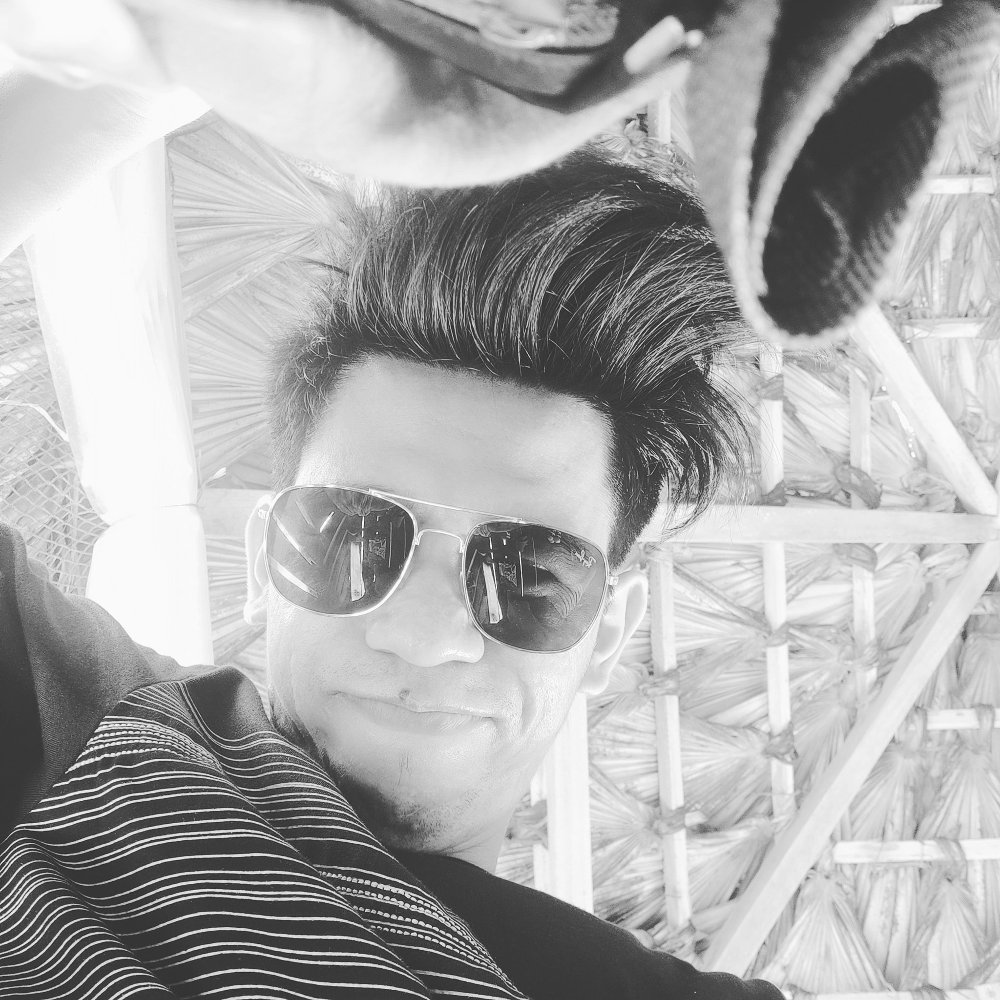
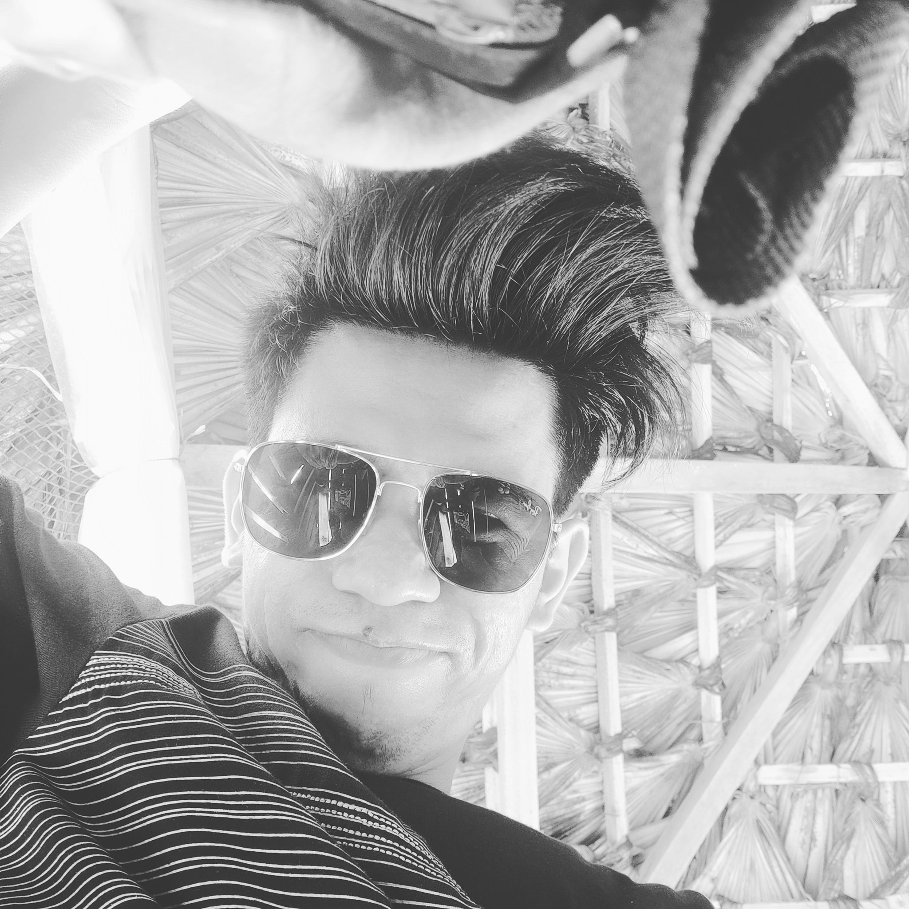

Intensifier
 

Leonardo H. Mutia
Bachelor of Science In Information Technology
Each and everyone have their own unique stories to tell.
And each of them tells different sides of their life. Now, I’m going to tell you my life story, my experiences, learning, belief, and dreams. And this is where my story begins. I am Leonardo Hilario Mutia, but my family and my friends call me by my nickname “Leo.” I was born here in Caloocan during the year of 1994 of October 20 and now at my 23rd year. My favorite subject is Filipino and currently, taking another subject ‘Asian Civilization’ which also picked my interest. Right now, I am in my first year in my chosen course, Bachelor of Science in Information Technology.
My hobby is to play computer games such as Defense of the Ancient
(DotA) and League of Legends (LoL), which became my stress reliever every time I’m sad or stressed about school works. Moreover, these are the games that comfort me and make me happy. Because of those games, I also get my virtual friends, but there are also my virtual foes, which is as they said, “Part of the Game.” Besides playing computer games, I also like to watch Korean dramas and anime because, their stories are much different than that of the dramas here in the Philippines and America. For me, I can proudly say that my strength is that I can control my emotions whatever situation rises. It’s because in everytime something happened, I can keep myself calm and think of the result of my actions in order to avoid misunderstandings. But every person can also have their own weakness, and getting impatient easily is what I can think of as my weakness. Every arguments and discussions is easily settled when there is one person who can admit their defeat easily, and I think that I can take that role.